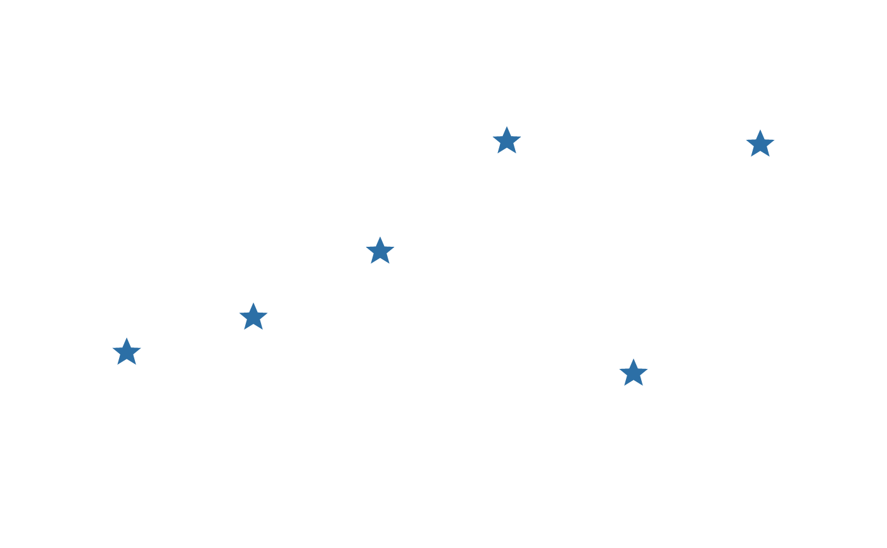

vl_svg_path() parses the d attribute of an SVG <path> into rings;
svg_grob() wraps that up as a drawable path_grob().
Arguments
- d
A character string of SVG path data.
- x, y
Centre of the drawn icon.
- size
Size of the icon's longer side, as a
vl_unit().- flip_y
Flip the y axis to convert from SVG's convention. Leave
TRUEunless yourdis already in a y-up space.- gp, name, vp, id, role
Passed to the returned
path_grob().
Value
vl_svg_path(): a data frame of x, y, id, closed.
svg_grob(): a path_grob().
Details
This is what makes vector icons usable as marks. Icon sets — Font Awesome,
Bootstrap Icons, Lucide, Material — ship one <path d="..."> per glyph, so
d is the unit of exchange, and the result here is real geometry: crisp at
any size, fillable with a gradient, strokable, and exported as <path> data
rather than an embedded bitmap.
Coordinate system
SVG's y axis points down and vellum's points up, so svg_grob() flips it
by default (flip_y = TRUE) — otherwise every icon arrives upside-down. The
geometry is then scaled to fit size, preserving aspect, and centred on
x/y. vl_svg_path() returns the raw parsed coordinates without any of
that, for callers doing their own placement.
What is supported
The whole d grammar: M/L/H/V/C/S/Q/T/A/Z in absolute and
relative forms, implicit repeated commands, the smooth-curve reflection rules,
and elliptical arcs. Curves are flattened to polylines.
What is not here is the rest of SVG: no stylesheets, gradients,
<use>, clip paths, or element transforms — this reads path data, not
documents. To pull d strings out of an SVG file, use an XML parser
(xml2::xml_find_all(doc, "//svg:path")) and pass each one here.
Malformed data yields whatever parsed before the problem rather than an error: a truncated icon is easier to diagnose than a stack trace.
Examples
# A five-pointed star, as an icon set would ship it.
star <- "M12 2 L15 9 L22 9.3 L16.5 13.8 L18.5 21 L12 17 L5.5 21 L7.5 13.8 L2 9.3 L9 9 Z"
vl_scene(3, 2, dpi = 96, bg = "white") |>
draw(svg_grob(star, x = 0.5, y = 0.5, size = vl_unit(15, "mm"),
gp = vl_gpar(fill = "#F1C40F", col = "grey30")))
# As per-point markers, which is what raster icons cannot do crisply.
set.seed(1)
s <- vl_scene(4, 2, dpi = 96, bg = "white")
for (i in 1:6) {
s <- draw(s, svg_grob(star, x = i / 7, y = runif(1) * 0.6 + 0.2,
size = vl_unit(6, "mm"),
gp = vl_gpar(fill = "#2C6FA6", col = NA)))
}
s
